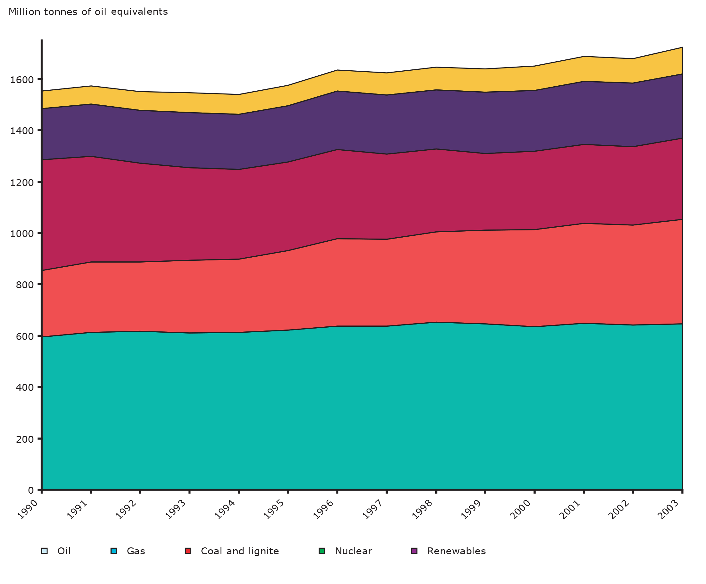

{{> partials/head }}
{{> partials/header-topics }}

<main class="wrapper container-fluid">
  <div class="cover cover--orange cover--short">
    <div class="cover__image-container">
      
    </div>
    <div class="cover__box">
      <div class="cover__text">
        <div class="cover__pretitle">FLIS topics</div>
        <h2 class="cover__title">Energy<br />story</h2>
        <i class="cover__icon icon icon--lighting"></i>
      </div>
      <a href="#" class="btn">Find out more</a>
    </div>
  </div>

  <div class="layout--white">
    <div class="block block--title-decoration">
      <h2 class="block__title">The European Union<br />Energy System</h2>
      <div class="block__content">
        <div class="narrow-container">
          <h3>Understanding supply: Where does your energy come from?</h3>
          <ul>
            <li>EU economies are dependent on fossil fuels for 75% of their gross energy inland consumption;</li>
            <li>Energy production and use caused majority of GHG emissions (link to climate change);</li>
            <li>The mix of fossil fuels has changed with a decline in the use of coal and an increase in the use of gas (link to gas and security challenge);</li>
            <li>Nuclear energy has remained fairly steady, accounting for 14% of the energy mix in 2011;</li>
            <li>The last decade has seen a decrease in the use of fossil fuels from 83% in 1990 to 75% in 2012, which has been offset by an increased use of renewable energies;</li>
            <li>The contribution of renewable energies to gross final energy consumption increased from 4% in 1990 to 15% in 2013.</li>
          </ul>
          
          <p>The EU countries are on track to make renewable energies 20% of final energy consumption by 2020 and have set a new target of 27% by 2030. In the European decarbonised economy at 2050, the share of renewable energy is expected to increase to between 55% and 75% of final energy consumption 1 . Some countries, such as Sweden, Latvia, Finland and Austria, where renewable energy was a third of final energy consumption in 2013 2 , are showing the way.</p>
          <br />
          <br />
          <hr />
          <ol>
            <li>European Energy Roadmap http://ec.europa.eu/energy/en/topics/energy-strategy/2020-energy-strategy</li>
          </ol>
        </div>
      </div>
    </div>
  </div>

  <div class="page-switch">
    <div class="page-switch__prev">
      <div class="page-switch__label">Previous:</div>
      <a href="#" class="page-switch__link">Table of contents</a>
    </div>
    <div class="page-switch__current">
      <div class="page-switch__label">Current:</div>
      Where do we stand? Energy - water - food trends at the European level
    </div>
    <div class="page-switch__next">
      <div class="page-switch__label">Next:</div>
      <a href="#" class="page-switch__link">What is being done? Europeanpolicies on water, energy and food</a>
    </div>
  </div>

  <div class="layout--default">
    <div class="block">
      <h2 class="block__title">Related stories</h2>
      <div class="block__content">
        <a href="#" class="topics-item topics-item--black topics-item--big">
          
          <div class="topics-item__hexagon"></div>
          <h3 class="topics-item__title">Resources nexus</h3>
        </a>
        <a href="#" class="topics-item topics-item--orange topics-item--big">
          
          <div class="topics-item__hexagon"></div>
          <h3 class="topics-item__title">Energy</h3>
        </a>
        <a href="#" class="topics-item topics-item--aqua topics-item--big">
          
          <div class="topics-item__hexagon"></div>
          <h3 class="topics-item__title">Water</h3>
        </a>
        <div class="clearfix"></div>
        <div class="text-center">
          <a href="#" class="btn">All of stories</a>
        </div>
      </div>
    </div>
  </div>
</main>

<div class="designs designs--topics-resources-story"></div>

{{> partials/footer }}
{{> partials/scripts }}
